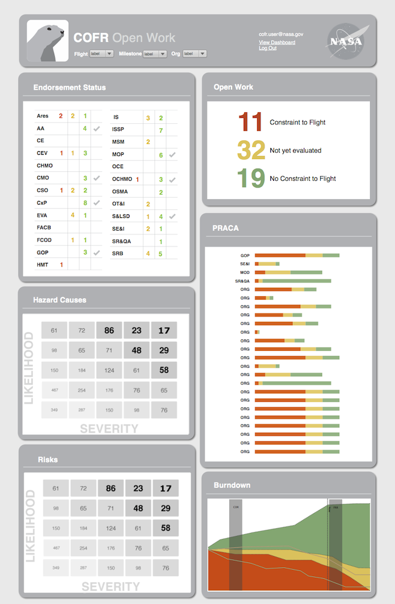

Certification of Flight Readiness
COFR (Certification of Flight Readiness) is a dashboard that helps NASA engineers determine how close they are to meeting mission milestones. The dashboard is populated semi-automatically. Engineers identify relevant data and tag it with a bookmark and the system pulls information from the bookmarked data source. I did user research and design for several widgets on the dashboard, and I did the visual for the dashboard. Below I will describe my design process for creating the endorsements widget.
Endorsement Status Widget Design Process
Step 1: Understand the domain
I spoke with a NASA engineer to learn about endorsements and I created a chart to convey my understanding to my team. An endorsement is a high-level signature from an organization at NASA stating that they are on track to meet deadlines. An analyst will sign an endorsement based on the status of the products that the organization is developing. If all products are on schedule then the analyst will sign the endorsement. A visualization for endorsements would need to show the status of individual products and the signature.

Step 2: Generate ideas on paper
Two different ideas for how to visualize endorsement information. The left visualization is complex and displays organizations and product statuses in a table. The right visualization shows less information and displays organizations in a list. Users could hover on name of an organization to see the status of all the individual products.
Step 3: Iterate and evaluate
Mocking up design ideas in context gave me a sense of design constraints. Designs that showed a lot of detail consumed too much space on the dashboard and the team chose a compact visualization. We showed a narrowed set of wireframes to an engineer who signs endorsements and he helped us refine our designs.

Step 4: Refine
The final design shows the status of individual products and the signature. Users can hover over a row to view the names of each product and to the color definitions.